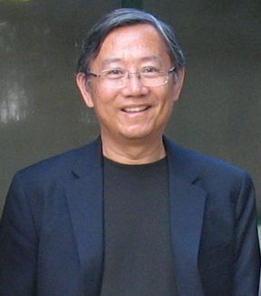

|  |
Personal Home Page of Samson Tu
Work E-Mail Address: swt -at- stanford.edu (where "-at-" = "@")
E-Mail Address for Non-Work Correspondence: samsontu -at- gmail.com
where ("-at-" = "@") ORCID: 0000-0002-0295-7821
Affiliation
Emeritus Staff Retiree
Stanford Center for Biomedical Informatics Research
Stanford University
|
Research/Professional Interests:
Modeling of biomedical ontologies and clinical guidelines and protocols, development of knowledge-based systems, knowledge
representation, temporal database, and temporal reasoning, protocol-based health care
Personal Research Statement:
Trained in computer science (with
specialization in artificial intelligence), my research focuses on
the representation of biomedical knowledge and the development
of computational methods to apply that knowledge to solve biomedical
problems. Over the years, I have worked with clinicians to
elicit, represent, and make computable clinical protocols and
guidelines and medical terminologies. Technically, I focus on (1) the
formal representation of and reasoning about biomedical concepts in
ontologies, and (2) the development of algorithms to apply such
representation in query systems and clinical decision support. I have
worked on projects that use such models to drive protocol-based
decision support and on projects where I developed novel
representations for autism, clinical research, and ICD-11 concepts.
My work is done as part of the PROTEGE,
ATHENA and other
projects at Stanford and elsewhere. In these projects, we are looking at ontology
development, meta-data representation, and protocols and guidelines in
breast cancer care, diabetes, hypertension, and other disease
areas.
More recently, I have been active in the World Health Organization's Family of International Classifications Network, serving as co-chair of the Informatics and Terminology Committee in the past and, more recently, the Mapping Task Force. I worked on the harmonized content model for the International Classification of Diseases (ICD), Health Interventions (ICHI), and Functioning Disability and Health (ICF). I led the effort to investigate issues related to harmonizing the content of the three classifications within the WHO-FIC Foundation.
Papers
References to Samson Tu's papers are available
here.
Honors
2001 Best paper award, American
Medical Informatics Association Annual Symposium, “A Virtual Medical
Record for Guideline-Based Decision Support,” with Johnson, P.A.,
Musen, M.A., and Purve, I.
2003 Elected Fellow of American College of Medical Informatics
2013 Distinguished paper award, American Medical
Informatics Association Annual Symposium, “Ontology-Based Federated
Data Access to Human Studies Information,” with Sim, I., Carini, S. and
other
Pictures
Past and Present
Interests:
|
|
Reading, travel, theater, arts, music, hiking, backpacking,
|
Last updated on 2026/01/05